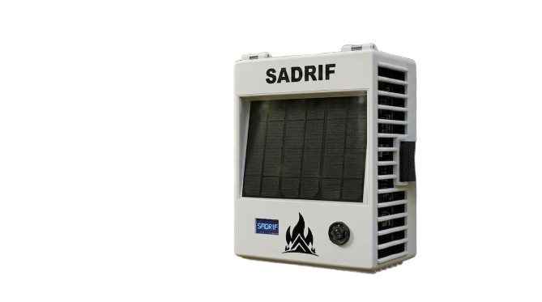

Sistema Autònom de Detecció de Risc d'Incendis Forestals

ESTACIÓ LIVE DE SABADELLEl Pla DRIF (Detecció de Risc d'Incendis Forestals) és un pla d'acció i conscienciació desenvolupat a partir del projecte de Treball de Recerca SADRIF. El seu objectiu és promoure la prevenció dels incendis forestals mitjançant la difusió d'informació i la sensibilització ciutadana.
El projecte SADRIF consisteix en el desenvolupament d'un sistema autònom alimentat amb energia solar, capaç de monitoritzar la temperatura, la humitat relativa, la pressió i la velocitat del vent.
| Hora | Temp °C | Hum % | Vent km/h | Pressió hPa | Risc (pts) | Estat |
|---|